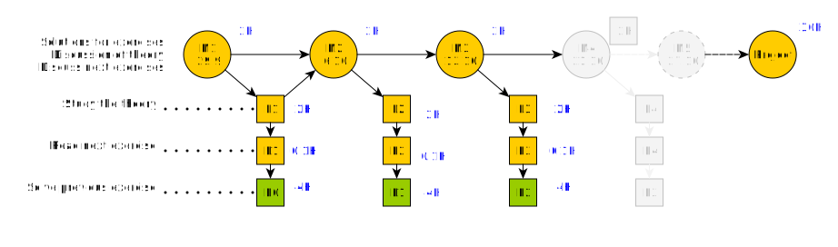

About the course¶
Students who complete this course successfully will be aware of the practical implementation and usage of machine learning algorithms. Furthermore, they will be able to apply machine learning algorithms in real problems using efficient programming languages, for example Python.
Requirements to pass the course¶
50% implementation of weekly exercises
Report of the group project exceeds the passing criteria
The problem of the task is clearly presented
The data used for solving the problem is clearly documented
The data preprocessing and feature calculation is clearly justified, explained and implemented. Excellent report cites research literature to justify the case.
Appropriate machine learning algorithms are chosen, the choice is rationally justified indicating knowledge of various machine learning methods, and the implementation is cleanly coded and explained using comments in the code. Again excellent report cites research literature in this phase.
The results are reported using high quality graphics and University’s document template. The graphs in the excellent report are of publication quality and they are correctly referenced in the text.
Acting as an opponent of at least one report.
The report is written using the writing guidelines of University of Vaasa. Ready made templates for Word and Overleaf are provided in the following pages:
Grade¶
The final grade is calculated based on points. The points can be gathered by solving weekly exercises and making the project work and writing a report of it. Maximum amount of points is shown in the following table:
Task |
Exercise |
|---|---|
Exercise 1 |
10 p |
Exercise 2 |
10 p |
Exercise 3 |
10 p |
Exercise 4 |
10 p |
Exercise 5 |
10 p |
Exercise 6 |
10 p |
Exercise 7 |
10 p |
Exercise 8 |
10 p |
Exercise 9 |
10 p |
Project work |
60 p |
Total |
150 p |
Semester schedule¶
The course starts in 29th of September and ends before the mid of December. The weekly meetings are arranged at the following times:
2021-09-29 at 12:15, Introduction
2021-10-06 at 12:15, Reading and cleaning data and plotting
2021-10-13 at 12:15, Preprocessing and feature extraction
2021-10-21 at 14:15, Unsupervised ML
2021-10-27 at 12:15, Unsupervised ML
2021-11-03 at 12:15, Supervised ML methods
2021-11-10 at 12:15, Supervised ML methods
2021-11-17 at 12:15, Evaluation and optimization of models
2021-11-24 at 12:15, Deep learning and on-line learning
2021-12-02 at 14:15, Project work Q/A
Weekly schedule¶
The weekly activities are planned as follows. You should
Read the theory material of the current week before the weekly meeting. You can also watch the video materials to help in learning process.
Check also the exercises of the current week before the meeting.
Join the weekly virtual meeting in Zoom to discuss about the theory and exercises and to see model solutions for selected exercises. The meetings are not mandatory.
After the meeting, solve the week’s exercises and return them before the next meeting begins (even if you are not attending)
This weekly schedule is also shown in the following figure.

M
Solving exercises¶
The exercises are given in the form of Jupyter Notebooks, which are kind of interactive documents, which you are suppose fill according to the instructions in the notebook. You can run them in Google Colab, Binder or in a Jupyter environment which you install in your own computer.
When you have finished the notebook, download it from Jupyter in notebook format (.ipynb) and upload the notebook in Moodle.